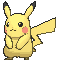

-
Bulbasaur #001

- Grama
- Veneno
Há uma semente de planta em suas costas desde o dia em que este Pokémon nasceu. A semente cresce lentamente.
-
Ivysaur #002

- Grama
- Veneno
Quando o bulbo nas costas cresce, parece perder a capacidade de ficar de pé nas patas traseiras.
-
Venusaur #003

- Grama
- Veneno
Sua planta floresce quando está absorvendo energia solar. Ele permanece em movimento para buscar a luz do sol.
-
Charmander #004

- Fogo
Tem preferência por coisas quentes. Quando chove, diz-se que o vapor jorra da ponta de sua cauda.
-
Charmeleon #005
- Fogo
Tem uma natureza bárbara. Em batalha, ele chicoteia sua cauda de fogo e corta com garras afiadas.
-
Charizard #006

- Fogo
Ele cospe fogo que é quente o suficiente para derreter pedras. Pode causar incêndios florestais soprando chamas.
-
Squirtle #007

- Água
Quando retrai seu longo pescoço em sua concha, esguicha água com força vigorosa.Quando se sente ameaçado, ele puxa seus membros para dentro de sua carapaça e borrifa água de sua boca.
-
Wartortle #008

- Água
É reconhecido como um símbolo de longevidade. Se sua casca tiver algas, aquele Wartortle é muito velho.Ele controla habilmente suas orelhas e cauda peludas para manter o equilíbrio enquanto nada.
-
Blastoise #009

- Água
Ele esmaga seu inimigo sob seu corpo pesado para causar desmaios. Em uma pitada, ele se retirará para dentro de sua casca.
-
Pichu #010
- Elétrico
É inábil em armazenar energia elétrica. Qualquer tipo de choque faz com que ele descarregue energia espontaneamente. Apesar da aparência fofa deste Pokémon, aqueles que querem viver com um devem se preparar para receber seus choques elétricos.
-
Pikachu #011
- Elétrico
Quando está com raiva, descarrega imediatamente a energia armazenada nas bolsas de suas bochechas.Quando vários desses Pokémon se reúnem, sua eletricidade pode aumentar e causar tempestades elétricas.
-
Raichu #012
- Elétrico
Sua cauda descarrega eletricidade no chão, protegendo-o de choques.Se as bolsas elétricas em suas bochechas ficarem totalmente carregadas, ambas as orelhas ficarão eretas.
-
Snorlax #013
- Normal
O estômago deste Pokémon é tão forte que mesmo comer comida mofada ou podre não o afetará.Não fica satisfeito a menos que coma mais de 880 libras de comida todos os dias. Quando termina de comer, vai imediatamente dormir.
-
Gengar #014
- Fantasma
- Veneno
Para roubar a vida de seu alvo, ele se esconde na sombra da presa e silenciosamente espera por uma oportunidade.O calafrio que causa faz as vítimas tremerem.
-
Mr. Mime #015
- Psíquico
A largura de suas mãos pode não ser coincidência - muitos cientistas acreditam que suas palmas foram aumentadas especificamente para pantomima.É conhecido por suas habilidades de pantomima de alto nível. Ele se protege de todos os tipos de ataques emitindo auras de seus dedos para criar paredes.